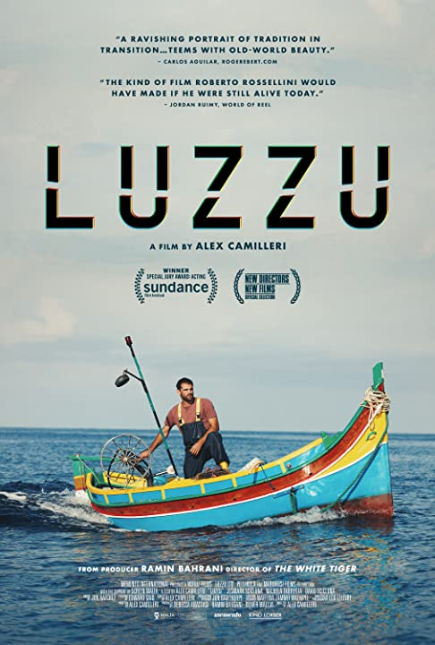
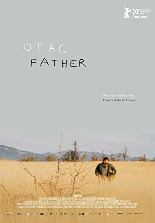
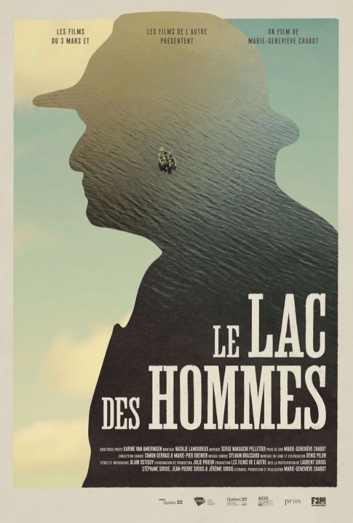
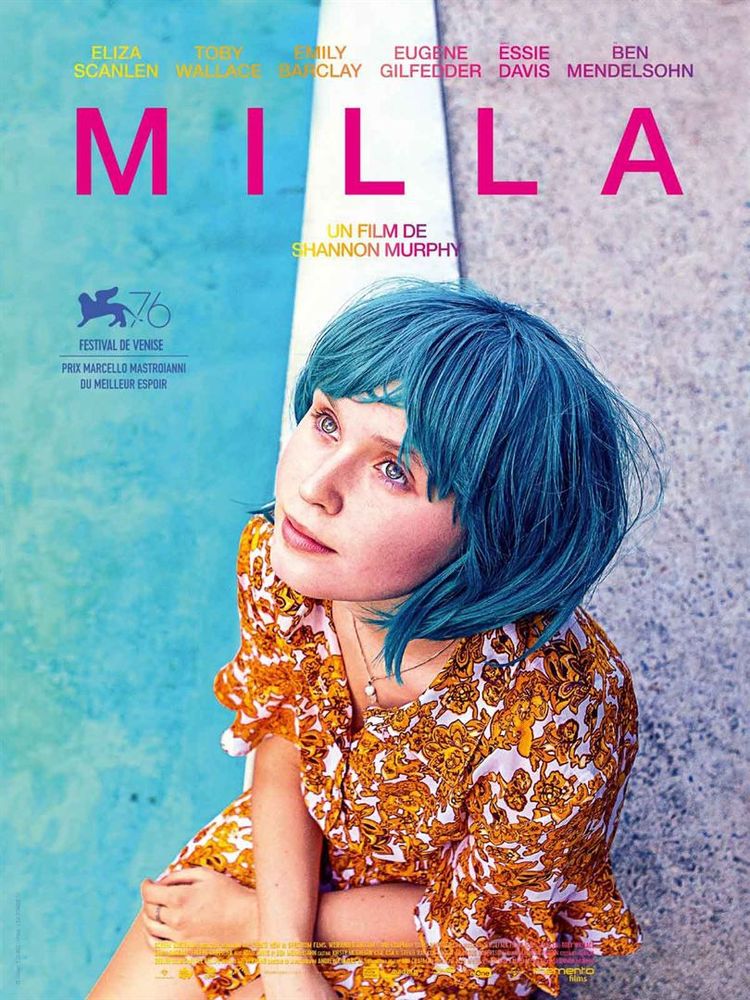

À l'affiche
Les prochaines projections auront lieu le 5 Août à partir de 18h00
LUZZU
Projection à 18h00
Écrit et réalisé par Alex Camilleri
Un pêcheur maltais doit faire un choix entre réparer son luzzu – un petit bateau de pêche traditionnel –
pour tenter de subvenir tant bien que mal aux besoins de sa famille, comme son père et son grand-père l’on fait avant lui.
Ou bien, le faire déclasser, recevoir en échange un dédommagement de l’UE, et commencer à travailler au noir pour un employeur dont les activités illicites,
déciment la population de poissons et menacent la biodiversité et la subsistance d’un grand nombre de familles de l’île.
La prodigieuse prestation de Jesmark Scicluna, non pas un acteur mais un véritable pêcheur maltais,
dans le rôle principal, a valu à « Luzzu » de remporter un prix du jury au Sundance Film Festival.
Évoquant aussi bien le néoréalisme de Luchino Visconti, de Roberto Rossellini et des frères Dardenne que le cinéma
engagé de Ken Loach et de Ramin Bahrani (Man Push Cart, The White Tiger), ce film envoûtant marque également les débuts
prometteurs d’Alex Camilleri, un jeune scénariste, réalisateur à découvrir.
Fiction | Malte | VOSF
Otac (Le Père)
Projection à 19h30
Écrit et réalisé par Srdan Golubovic
Nikola, un travailleur journalier père de deux enfants vit dans une petite ville serbe.
Quand sa femme, rongée par la pauvreté et la faim commet un acte d’ultime détresse, il se voir retirer la garde de ses enfants.
On lui explique qu’ils resteront en famille d’accueil tant qu’il ne sera pas en mesure de leur offrir des conditions de vie convenables.
Mais malgré tous ses efforts et de nombreux recours, le directeur des services sociaux refuse de les lui rendre.
Nikola se met à soupçonner les fonctionnaires locaux de corruption et décide de traverser une partie de la Serbie à pied et sans un sou en poche,
pour plaider sa cause devant le ministère national à Belgrade. Porté par l’amour,
ce père de famille refuse de renoncer à la justice et au droit d’élever ses enfants.
Un film émouvant qui parle de corruption et d’inégalités. Des images sublimes et révélatrices.
Un personnage qui s’engage dans une traversée héroïque sans jamais céder au désespoir.
Fiction | Serbie – Croatie – France – Allemagne – Slovénie | VOSF
Le Lac des Hommes
Projection à 21h00
Écrit et réalisé par Marie-Geneviève Chabot
Trois frères au cheminement différent partent en voyage de pêche avec leur père qui,
quarante ans plus tôt, est parti refaire sa vie loin de ses enfants. Entre deux prises,
les histoires du passé ressurgissent et ce rassemblement familial devient l’occasion de clarifier des questions laissées en suspens pendant trop d’années.
Documentaire qui aborde avec doigté les thèmes de la fratrie, de l’absence et du sentiment d’abandon,
cette expédition toute masculine se transforme au gré des courants en voyage initiatique à la recherche d’un idéal familial perdu.
Documentaire | Québec
Babyteeth (Milla)
Projection à 22h30
Réalisé par Shannon Murphy
Les parents de Milla, une adolescente souffrant d’une grave maladie,
sont sous le choc quand celle-ci tombe follement amoureuse d’un petit dealer de quartier.
Si cette première expérience de l’amour redonne la joie de vivre à Milla, tout se complique très vite.
Et c’est elle qui montrera à ceux autour d’elle, ses parents, le dealer, un jeune violoniste, une voisine enceinte,
ce que c’est que de vivre sans peur ni regrets. Ce qui s’annonçait comme une catastrophe pour les membres de cette famille,
les mène finalement à accepter la nature chaotique de la vie et à y trouver un équilibre salutaire.
Babyteeth est un hommage joyeux à la vie qui nous est donnée et aux vertus transformatrices de l’amour
Fiction | Australie | VOSF